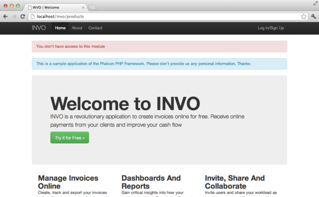

內容目录
上一个主题< 教程 1：让我们通过例子来学习（Tutorial 1: Let’s learn by example） 下一个主题教程 3：创建简单的 RESET API（Tutorial 3: Creating a Simple REST API） > 本页 |
教程 2：INVO 项目讲解（Tutorial 2: Explaining INVO）¶In this second tutorial, we’ll explain a more complete application in order to deepen the development with Phalcon. INVO is one of the applications we have created as samples. INVO is a small website that allows their users to generate invoices, and do other tasks such as manage their customers and products. You can clone its code from Github. Also, INVO was made with Bootstrap as client-side framework. Although the application does not generate invoices, it still serves as an example to understand how the framework works. Project Structure¶Once you clone the project in your document root you’ll see the following structure: invo/
app/
app/config/
app/controllers/
app/library/
app/models/
app/plugins/
app/views/
public/
public/bootstrap/
public/css/
public/js/
schemas/
As you know, Phalcon does not impose a particular file structure for application development. This project provides a simple MVC structure and a public document root. Once you open the application in your browser http://localhost/invo you’ll see something like this: 
The application is divided into two parts, a frontend, that is a public part where visitors can receive information about INVO and request contact information. The second part is the backend, an administrative area where a registered user can manage his/her products and customers. 路由（Routing）¶INVO uses the standard route that is built-in with the Router component. These routes match the following pattern: /:controller/:action/:params. This means that the first part of a URI is the controller, the second the action and the rest are the parameters. The following route /session/register executes the controller SessionController and its action registerAction. 配置（Configuration）¶INVO has a configuration file that sets general parameters in the application. This file is read in the first few lines of the bootstrap file (public/index.php): <?php
//Read the configuration
$config = new Phalcon\Config\Adapter\Ini('../app/config/config.ini');
Phalcon\Config allows us to manipulate the file in an object-oriented way. The configuration file contains the following settings: [database]
host = localhost
username = root
password = secret
name = invo
[application]
controllersDir = /../app/controllers/
modelsDir = /../app/models/
viewsDir = /../app/views/
pluginsDir = /../app/plugins/
libraryDir = /../app/library/
baseUri = /invo/
;[metadata]
;adapter = "Apc"
;suffix = my-suffix
;lifetime = 3600
Phalcon hasn’t any pre-defined convention settings. Sections help us to organize the options as appropriate. In this file there are three sections to be used later. 自动加载（Autoloaders）¶The second part that appears in the bootstrap file (public/index.php) is the autoloader. The autoloader registers a set of directories in which the application will look for the classes that it eventually will need. <?php
$loader = new \Phalcon\Loader();
$loader->registerDirs(
array(
$config->application->controllersDir,
$config->application->pluginsDir,
$config->application->libraryDir,
$config->application->modelsDir,
)
)->register();
Note that the above code has registered the directories that were defined in the configuration file. The only directory that is not registered is the viewsDir, because it contains HTML + PHP files but no classes. 处理请求（Handling the Request）¶If we skip to the end of the file, the request is finally handled by Phalcon\Mvc\Application which initializes and executes all that is necessary to make the application run: <?php
$app = new \Phalcon\Mvc\Application($di);
echo $app->handle()->getContent();
依赖注入（Dependency Injection）¶Look at the first line of the code block above, the Application class constructor is receiving the variable $di as an argument. What is the purpose of that variable? Phalcon is a highly decoupled framework, so we need a component that acts as glue to make everything work together. That component is Phalcon\DI. It is a service container that also performs dependency injection, instantiating all components as they are needed by the application. There are many ways of registering services in the container. In INVO, most services have been registered using anonymous functions. Thanks to this, the objects are instantiated in a lazy way, reducing the resources needed by the application. For instance, in the following excerpt the session service is registered. The anonymous function will only be called when the application requires access to the session data: <?php
//Start the session the first time a component requests the session service
$di->set('session', function() {
$session = new Phalcon\Session\Adapter\Files();
$session->start();
return $session;
});
Here, we have the freedom to change the adapter, perform additional initialization and much more. Note that the service was registered using the name “session”. This is a convention that will allow the framework to identify the active service in the services container. A request can use many services and registering each service individually can be a cumbersome task. For that reason, the framework provides a variant of Phalcon\DI called Phalcon\DI\FactoryDefault whose task is to register all services providing a full-stack framework. <?php
// The FactoryDefault Dependency Injector automatically registers the
// right services providing a full-stack framework
$di = new \Phalcon\DI\FactoryDefault();
It registers the majority of services with components provided by the framework as standard. If we need to override the definition of some service we could just set it again as we did above with “session”. This is the reason for the existence of the variable $di. 登录应用（Log into the Application）¶A “log in” facility will allow us to work on backend controllers. The separation between backend controllers and frontend ones is only logical. All controllers are located in the same directory (app/controllers/). To enter the system, users must have a valid username and password. Users are stored in the table “users” in the database “invo”. Before we can start a session, we need to configure the connection to the database in the application. A service called “db” is set up in the service container with the connection information. As with the autoloader, we are again taking parameters from the configuration file in order to configure a service: <?php
// Database connection is created based on parameters defined in the configuration file
$di->set('db', function() use ($config) {
return new \Phalcon\Db\Adapter\Pdo\Mysql(array(
"host" => $config->database->host,
"username" => $config->database->username,
"password" => $config->database->password,
"dbname" => $config->database->name
));
});
Here, we return an instance of the MySQL connection adapter. If needed, you could do extra actions such as adding a logger, a profiler or change the adapter, setting it up as you want. The following simple form (app/views/session/index.phtml) requests the login information. We’ve removed some HTML code to make the example more concise: <?php echo $this->tag->form('session/start') ?>
<label for="email">Username/Email</label>
<?php echo $this->tag->textField(array("email", "size" => "30")) ?>
<label for="password">Password</label>
<?php echo $this->tag->passwordField(array("password", "size" => "30")) ?>
<?php echo $this->tag->submitButton(array('Login')) ?>
</form>
The SessionController::startAction function (app/controllers/SessionController.php) has the task of validating the data entered in the form including checking for a valid user in the database: <?php
class SessionController extends ControllerBase
{
// ...
private function _registerSession($user)
{
$this->session->set('auth', array(
'id' => $user->id,
'name' => $user->name
));
}
public function startAction()
{
if ($this->request->isPost()) {
//Receiving the variables sent by POST
$email = $this->request->getPost('email', 'email');
$password = $this->request->getPost('password');
$password = sha1($password);
//Find the user in the database
$user = Users::findFirst(array(
"email = :email: AND password = :password: AND active = 'Y'",
"bind" => array('email' => $email, 'password' => $password)
));
if ($user != false) {
$this->_registerSession($user);
$this->flash->success('Welcome ' . $user->name);
//Forward to the 'invoices' controller if the user is valid
return $this->dispatcher->forward(array(
'controller' => 'invoices',
'action' => 'index'
));
}
$this->flash->error('Wrong email/password');
}
//Forward to the login form again
return $this->dispatcher->forward(array(
'controller' => 'session',
'action' => 'index'
));
}
}
For simplicity, we have used “sha1” to store the password hashes in the database, however, this algorithm is not recommended in real applications, use “bcrypt” instead. Note that multiple public attributes are accessed in the controller like: $this->flash, $this->request or $this->session. These are services defined in the services container from earlier. When they’re accessed the first time, they are injected as part of the controller. These services are shared, which means that we are always accessing the same instance regardless of the place where we invoke them. For instance, here we invoke the “session” service and then we store the user identity in the variable “auth”: <?php
$this->session->set('auth', array(
'id' => $user->id,
'name' => $user->name
));
保护后端（Securing the Backend）¶The backend is a private area where only registered users have access. Therefore, it is necessary to check that only registered users have access to these controllers. If you aren’t logged into the application and you try to access, for example, the products controller (which is private) you will see a screen like this:

Every time someone attempts to access any controller/action, the application verifies that the current role (in session) has access to it, otherwise it displays a message like the above and forwards the flow to the home page. Now let’s find out how the application accomplishes this. The first thing to know is that there is a component called Dispatcher. It is informed about the route found by the Routing component. Then, it is responsible for loading the appropriate controller and execute the corresponding action method. Normally, the framework creates the Dispatcher automatically. In our case, we want to perform a verification before executing the required action, checking if the user has access to it or not. To achieve this, we have replaced the component by creating a function in the bootstrap: <?php
$di->set('dispatcher', function() use ($di) {
$dispatcher = new Phalcon\Mvc\Dispatcher();
return $dispatcher;
});
We now have total control over the Dispatcher used in the application. Many components in the framework trigger events that allow us to modify their internal flow of operation. As the Dependency Injector component acts as glue for components, a new component called EventsManager allows us to intercept the events produced by a component, routing the events to listeners. 事件管理（Events Management）¶An EventsManager allows us to attach listeners to a particular type of event. The type that interests us now is “dispatch”. The following code filters all events produced by the Dispatcher: <?php
$di->set('dispatcher', function() use ($di) {
//Obtain the standard eventsManager from the DI
$eventsManager = $di->getShared('eventsManager');
//Instantiate the Security plugin
$security = new Security($di);
//Listen for events produced in the dispatcher using the Security plugin
$eventsManager->attach('dispatch', $security);
$dispatcher = new Phalcon\Mvc\Dispatcher();
//Bind the EventsManager to the Dispatcher
$dispatcher->setEventsManager($eventsManager);
return $dispatcher;
});
The Security plugin is a class located at (app/plugins/Security.php). This class implements the method “beforeDispatch”. This is the same name as one of the events produced in the Dispatcher: <?php
use Phalcon\Events\Event,
Phalcon\Mvc\User\Plugin,
Phalcon\Mvc\Dispatcher,
Phalcon\Acl;
class Security extends Plugin
{
// ...
public function beforeDispatch(Event $event, Dispatcher $dispatcher)
{
// ...
}
}
The hook events always receive a first parameter that contains contextual information of the event produced ($event) and a second one that is the object that produced the event itself ($dispatcher). It is not mandatory that plugins extend the class Phalcon\Mvc\User\Plugin, but by doing this they gain easier access to the services available in the application. Now, we’re verifying the role in the current session, checking if the user has access using the ACL list. If the user does not have access we redirect to the home screen as explained before: <?php
use Phalcon\Events\Event,
Phalcon\Mvc\User\Plugin,
Phalcon\Mvc\Dispatcher,
Phalcon\Acl;
class Security extends Plugin
{
// ...
public function beforeExecuteRoute(Event $event, Dispatcher $dispatcher)
{
//Check whether the "auth" variable exists in session to define the active role
$auth = $this->session->get('auth');
if (!$auth) {
$role = 'Guests';
} else {
$role = 'Users';
}
//Take the active controller/action from the dispatcher
$controller = $dispatcher->getControllerName();
$action = $dispatcher->getActionName();
//Obtain the ACL list
$acl = $this->getAcl();
//Check if the Role have access to the controller (resource)
$allowed = $acl->isAllowed($role, $controller, $action);
if ($allowed != Acl::ALLOW) {
//If he doesn't have access forward him to the index controller
$this->flash->error("You don't have access to this module");
$dispatcher->forward(
array(
'controller' => 'index',
'action' => 'index'
)
);
//Returning "false" we tell to the dispatcher to stop the current operation
return false;
}
}
}
提供 ACL 列表（Providing an ACL list）¶In the above example we have obtained the ACL using the method $this->_getAcl(). This method is also implemented in the Plugin. Now we are going to explain step-by-step how we built the access control list (ACL): <?php
//Create the ACL
$acl = new Phalcon\Acl\Adapter\Memory();
//The default action is DENY access
$acl->setDefaultAction(Phalcon\Acl::DENY);
//Register two roles, Users is registered users
//and guests are users without a defined identity
$roles = array(
'users' => new Phalcon\Acl\Role('Users'),
'guests' => new Phalcon\Acl\Role('Guests')
);
foreach ($roles as $role) {
$acl->addRole($role);
}
Now we define the resources for each area respectively. Controller names are resources and their actions are accesses for the resources: <?php
//Private area resources (backend)
$privateResources = array(
'companies' => array('index', 'search', 'new', 'edit', 'save', 'create', 'delete'),
'products' => array('index', 'search', 'new', 'edit', 'save', 'create', 'delete'),
'producttypes' => array('index', 'search', 'new', 'edit', 'save', 'create', 'delete'),
'invoices' => array('index', 'profile')
);
foreach ($privateResources as $resource => $actions) {
$acl->addResource(new Phalcon\Acl\Resource($resource), $actions);
}
//Public area resources (frontend)
$publicResources = array(
'index' => array('index'),
'about' => array('index'),
'session' => array('index', 'register', 'start', 'end'),
'contact' => array('index', 'send')
);
foreach ($publicResources as $resource => $actions) {
$acl->addResource(new Phalcon\Acl\Resource($resource), $actions);
}
The ACL now have knowledge of the existing controllers and their related actions. Role “Users” has access to all the resources of both frontend and backend. The role “Guests” only has access to the public area: <?php
//Grant access to public areas to both users and guests
foreach ($roles as $role) {
foreach ($publicResources as $resource => $actions) {
$acl->allow($role->getName(), $resource, '*');
}
}
//Grant access to private area only to role Users
foreach ($privateResources as $resource => $actions) {
foreach ($actions as $action) {
$acl->allow('Users', $resource, $action);
}
}
Hooray!, the ACL is now complete. 用户组件（User Components）¶All the UI elements and visual style of the application has been achieved mostly through Bootstrap. Some elements, such as the navigation bar changes according to the state of the application. For example, in the upper right corner, the link “Log in / Sign Up” changes to “Log out” if an user is logged into the application. This part of the application is implemented in the component “Elements” (app/library/Elements.php). <?php
use Phalcon\Mvc\User\Component;
class Elements extends Component
{
public function getMenu()
{
//...
}
public function getTabs()
{
//...
}
}
This class extends the Phalcon\Mvc\User\Component, it is not imposed to extend a component with this class, but it helps to get access more quickly to the application services. Now, we register this class in the services container: <?php
//Register an user component
$di->set('elements', function(){
return new Elements();
});
As controllers, plugins or components within a view, this component also has access to the services registered in the container and by just accessing an attribute with the same name as a previously registered service: <div class="navbar navbar-fixed-top">
<div class="navbar-inner">
<div class="container">
<a class="btn btn-navbar" data-toggle="collapse" data-target=".nav-collapse">
<span class="icon-bar"></span>
<span class="icon-bar"></span>
<span class="icon-bar"></span>
</a>
<a class="brand" href="#">INVO</a>
<?php echo $this->elements->getMenu() ?>
</div>
</div>
</div>
<div class="container">
<?php echo $this->getContent() ?>
<hr>
<footer>
<p>© Company 2012</p>
</footer>
</div>
The important part is: <?php echo $this->elements->getMenu() ?>
CRUD 的使用（Working with the CRUD）¶Most options that manipulate data (companies, products and types of products), were developed using a basic and common CRUD (Create, Read, Update and Delete). Each CRUD contains the following files: invo/
app/
app/controllers/
ProductsController.php
app/models/
Products.php
app/views/
products/
edit.phtml
index.phtml
new.phtml
search.phtml
Each controller has the following actions: <?php
class ProductsController extends ControllerBase
{
/**
* The start action, it shows the "search" view
*/
public function indexAction()
{
//...
}
/**
* Execute the "search" based on the criteria sent from the "index"
* Returning a paginator for the results
*/
public function searchAction()
{
//...
}
/**
* Shows the view to create a "new" product
*/
public function newAction()
{
//...
}
/**
* Shows the view to "edit" an existing product
*/
public function editAction()
{
//...
}
/**
* Creates a product based on the data entered in the "new" action
*/
public function createAction()
{
//...
}
/**
* Updates a product based on the data entered in the "edit" action
*/
public function saveAction()
{
//...
}
/**
* Deletes an existing product
*/
public function deleteAction($id)
{
//...
}
}
搜索表单（The Search Form）¶Every CRUD starts with a search form. This form shows each field that has the table (products), allowing the user creating a search criteria from any field. Table “products” has a relationship to the table “products_types”. In this case, we previously queried the records in this table in order to facilitate the search by that field: <?php
/**
* The start action, it shows the "search" view
*/
public function indexAction()
{
$this->persistent->searchParams = null;
$this->view->productTypes = ProductTypes::find();
}
All the “product types” are queried and passed to the view as a local variable “productTypes”. Then, in the view (app/views/index.phtml) we show a “select” tag filled with those results: <div>
<label for="product_types_id">Product Type</label>
<?php echo $this->tag->select(array(
"product_types_id",
$productTypes,
"using" => array("id", "name"),
"useDummy" => true
)) ?>
</div>
Note that $productTypes contains the data necessary to fill the SELECT tag using Phalcon\Tag::select. Once the form is submitted, the action “search” is executed in the controller performing the search based on the data entered by the user. 执行搜索（Performing a Search）¶The action “search” has a dual behavior. When accessed via POST, it performs a search based on the data sent from the form. But when accessed via GET it moves the current page in the paginator. To differentiate one from another HTTP method, we check it using the Request component: <?php
/**
* Execute the "search" based on the criteria sent from the "index"
* Returning a paginator for the results
*/
public function searchAction()
{
if ($this->request->isPost()) {
//create the query conditions
} else {
//paginate using the existing conditions
}
//...
}
With the help of Phalcon\Mvc\Model\Criteria, we can create the search conditions intelligently based on the data types and values sent from the form: <?php
$query = Criteria::fromInput($this->di, "Products", $_POST);
This method verifies which values are different from “” (empty string) and null and takes them into account to create the search criteria:
Additionally, “Criteria” ignores all the $_POST variables that do not match any field in the table. Values are automatically escaped using “bound parameters”. Now, we store the produced parameters in the controller’s session bag: <?php
$this->persistent->searchParams = $query->getParams();
A session bag, is a special attribute in a controller that persists between requests. When accessed, this attribute injects a Phalcon\Session\Bag service that is independent in each controller. Then, based on the built params we perform the query: <?php
$products = Products::find($parameters);
if (count($products) == 0) {
$this->flash->notice("The search did not found any products");
return $this->forward("products/index");
}
If the search doesn’t return any product, we forward the user to the index action again. Let’s pretend the search returned results, then we create a paginator to navigate easily through them: <?php
$paginator = new Phalcon\Paginator\Adapter\Model(array(
"data" => $products, //Data to paginate
"limit" => 5, //Rows per page
"page" => $numberPage //Active page
));
//Get active page in the paginator
$page = $paginator->getPaginate();
Finally we pass the returned page to view: <?php
$this->view->setVar("page", $page);
In the view (app/views/products/search.phtml), we traverse the results corresponding to the current page: <?php foreach ($page->items as $product) { ?>
<tr>
<td><?= $product->id ?></td>
<td><?= $product->getProductTypes()->name ?></td>
<td><?= $product->name ?></td>
<td><?= $product->price ?></td>
<td><?= $product->active ?></td>
<td><?= $this->tag->linkTo("products/edit/" . $product->id, 'Edit') ?></td>
<td><?= $this->tag->linkTo("products/delete/" . $product->id, 'Delete') ?></td>
</tr>
<?php } ?>
创建和更新记录（Creating and Updating Records）¶Now let’s see how the CRUD creates and updates records. From the “new” and “edit” views the data entered by the user are sent to the actions “create” and “save” that perform actions of “creating” and “updating” products respectively. In the creation case, we recover the data submitted and assign them to a new “products” instance: <?php
/**
* Creates a product based on the data entered in the "new" action
*/
public function createAction()
{
$products = new Products();
$products->id = $this->request->getPost("id", "int");
$products->product_types_id = $this->request->getPost("product_types_id", "int");
$products->name = $this->request->getPost("name", "striptags");
$products->price = $this->request->getPost("price", "double");
$products->active = $this->request->getPost("active");
//...
}
Data is filtered before being assigned to the object. This filtering is optional, the ORM escapes the input data and performs additional casting according to the column types. When saving we’ll know whether the data conforms to the business rules and validations implemented in the model Products: <?php
/**
* Creates a product based on the data entered in the "new" action
*/
public function createAction()
{
//...
if (!$products->create()) {
//The store failed, the following messages were produced
foreach ($products->getMessages() as $message) {
$this->flash->error((string) $message);
}
return $this->forward("products/new");
} else {
$this->flash->success("Product was created successfully");
return $this->forward("products/index");
}
}
Now, in the case of product updating, first we must present to the user the data that is currently in the edited record: <?php
/**
* Shows the view to "edit" an existing product
*/
public function editAction($id)
{
//...
$product = Products::findFirstById($id);
$this->tag->setDefault("id", $product->id);
$this->tag->setDefault("product_types_id", $product->product_types_id);
$this->tag->setDefault("name", $product->name);
$this->tag->setDefault("price", $product->price);
$this->tag->setDefault("active", $product->active);
}
The “setDefault” helper sets a default value in the form on the attribute with the same name. Thanks to this, the user can change any value and then sent it back to the database through to the “save” action: <?php
/**
* Updates a product based on the data entered in the "edit" action
*/
public function saveAction()
{
//...
//Find the product to update
$id = $this->request->getPost("id");
$product = Products::findFirstById($id);
if (!$product) {
$this->flash->error("products does not exist " . $id);
return $this->forward("products/index");
}
//... assign the values to the object and store it
}
动态更改标题（Changing the Title Dynamically）¶When you browse between one option and another will see that the title changes dynamically indicating where we are currently working. This is achieved in each controller initializer: <?php
class ProductsController extends ControllerBase
{
public function initialize()
{
//Set the document title
$this->tag->setTitle('Manage your product types');
parent::initialize();
}
//...
}
Note, that the method parent::initialize() is also called, it adds more data to the title: <?php
class ControllerBase extends Phalcon\Mvc\Controller
{
protected function initialize()
{
//Prepend the application name to the title
$this->tag->prependTitle('INVO | ');
}
//...
}
Finally, the title is printed in the main view (app/views/index.phtml): <!DOCTYPE html>
<html>
<head>
<?php echo $this->tag->getTitle() ?>
</head>
<!-- ... -->
</html>
结束语（Conclusion）¶This tutorial covers many more aspects of building applications with Phalcon, hope you have served to learn more and get more out of the framework. |